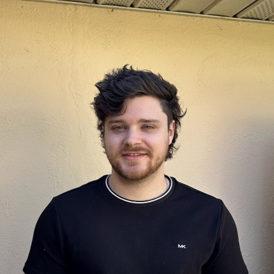

Vulkan Game Engine
A C++ engine combining PBR rendering, an interactive scene editor, GPU object picking, and Jolt rigid-body physics.
I’m Jackson Shuminski, a graphics and game developer turning complex systems into immersive experiences. From planetary oceans to GPU simulations, I bring the math to life.
 RENDER / 001
RENDER / 001
A C++ engine combining PBR rendering, an interactive scene editor, GPU object picking, and Jolt rigid-body physics.

A GPU fluid simulation built with compute shaders, 3D textures, and Blueprint controls for live experimentation.

From layered waves to buoyant objects: a custom water simulation and rendering pipeline built from the ground up.

Thousands of agents, three simple rules. Exploring parallel computation and emergent behavior on the GPU.

A third-person roguelike shooter. I developed player controls, projectiles, and a shared ability system for players and enemies.
Developed experimental volumetric water for the VRage engine used in Space Engineers 2, including planetary oceans and water raymarching.
02Built a multiplayer VR learning experience in Unity and coordinated user studies, from participant recruitment to study sessions.
03Developed synthetic eye-image pipelines and anatomically detailed 3D models to support machine learning research.
04Built a browser-based 3D maze with three.js, quaternion-based navigation, custom collision detection, and original 3D assets.

I’m Jackson, a game developer with a BS/MS in Game Design and Development from Rochester Institute of Technology.
My work spans real-time graphics, fluid simulation, gameplay systems, and interactive 3D experiences. I enjoy taking a complex idea from the math behind it to something you can see, play, and explore.
DirectX 11 / 12, DXR, HLSL, OpenGL, WebGL
Unreal Engine, Unity, C++, C#, MonoGame
Python, JavaScript, three.js, Maya, Photoshop
Have a project or opportunity in mind? Get in touch.